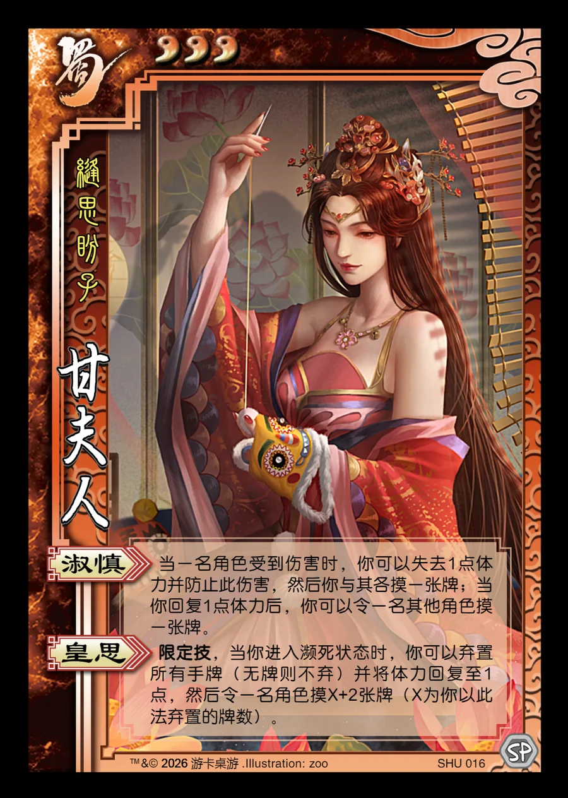

点击卡面查看大图
蜀
甘夫人
♥3缝思盼子
淑慎
当一名角色受到伤害时，你可以失去1点体力并防止此伤害，然后你与其各摸一张牌；当你回复1点体力后，你可以令一名其他角色摸一张牌。
皇思限定技
限定技，当你进入濒死状态时，你可以弃置所有手牌（无牌则不弃）并将体力回复至1点，然后令一名角色摸X+2张牌（X为你以此法弃置的牌数）。

点击卡面查看大图
缝思盼子
当一名角色受到伤害时，你可以失去1点体力并防止此伤害，然后你与其各摸一张牌；当你回复1点体力后，你可以令一名其他角色摸一张牌。
限定技，当你进入濒死状态时，你可以弃置所有手牌（无牌则不弃）并将体力回复至1点，然后令一名角色摸X+2张牌（X为你以此法弃置的牌数）。